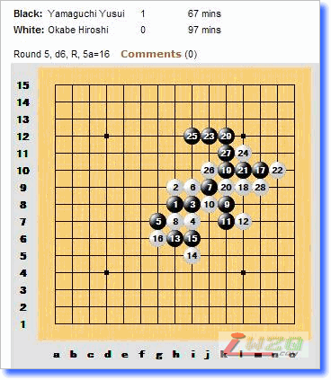

通过自己的计算力获胜
#1 通过自己的计算力获胜 作者：有志青年 发表时间：2007-8-12 11:45:01
小报记者> as I know, Japanese renju style is to think calculation is the most important, but in other countries such as China, most of our players think to study and learn varients which they have met before is important. Some times, in tournament, they used this and needn't use brain, just played by memory then still won. How do you think about this?
山口>When one player get "easy winning by memory", the game has no value. It is only for one point in the tournament.
After 20 years later, there will be many new players maybe. They never see such the "easy winning games". Because the game can not teach them any more.
Important thing is "to get winning by own calculating skill". It is not "to get winning points in tournament".
Result is not more important than skill. This is traditional Japanese style.
译文：
小报记者>据我所知，日本连珠的风格是以计算为主，但是其他国家，比如中国，棋手们认为学习并且记忆定式是主要的。在很多比赛中，大家依靠以往的研究而不依靠计算，即凭借“记忆力”获胜，您对此有什么看法？
山口>当一个棋手依靠记忆而取得简单的胜利的时候，那盘对局将没有任何价值，仅仅是为了得到比赛中的一分。
20年之后，或许会有很多新的棋手。他们看到以前的对局记录不会认为是轻易获胜的，因为那盘对局不可能教给他们更多的东西。
重要的是：通过自己的计算力获胜。而并不是以在比赛中得分。
结果没有技术重要。这就是传统的日本风格。

这是AT第5轮的一盘对局，是两名日本棋手的内战。冈部宽走出雨月开局，虽然是理论必胜，但是白还是有很多强硬的手段，加上山口可能对定式不是太熟，可能考虑到这些因素，冈部开了这个局，山口提出交换也符合常理。毕竟冈部开这个也不会是一时兴起，必然对一些黑棋必胜的手段事先进行了准备，因为近年来山口在大赛中总喜欢执白下黑优局，山口也有可能不交换。
4走的八卦防守，最强。5手是第2打点，从棋谱上看被拔掉的另外一个走的是图中16的位置。那个是必胜，对于那个5，虽然有的变化黑想必胜到20多甚至30多手都是唯一，而且要走出很多妙手。但是对于山口这种级别的棋手以及这么长的思考时间的情况下，留那个等于送死。
6将局面还原成斜月一打（即4，6交换通型），这也是认为此局面白的最强变化，到第8手都很强。此时局面成对称型，实战9跳活必然，因为9走10或者g8就会被白棋包围，想突围出去就很难了。不过个人认为9走f8更好些，因为那样空间宽敞，更利于以后的进攻。但是从后面的进程看，这个并没有因为存在边线问题而没有杀掉。
11-15都是必然，其实按照国内的研究，15之后周围的一圈16都是必败的，冈部思考了半天最终走了如图的16，可能他没有看到黑棋下面有好的手段。山口长考之后走出了17，
这里不得不说他确实去拥有九段的水平，17没有直接下出来说明他事先很可能并不知道这个是必胜。不管怎么说，17已经奠定胜局，白必须跟过来防，但是却没办法防干净。18应该是最强了，接下来到25，漂亮的VCT。25之后，我通过直播看到冈部还在长考，但是无济于事，已经守不住了。
29之后，白投了。
#2 Re:通过自己的计算力获胜 作者：屏蔽 发表时间：2007-8-12 12:37:18
考这个必胜太恶劣了，这样我都会走……23要点必胜。
#3 Re:通过自己的计算力获胜 作者：无尽 发表时间：2007-8-12 15:44:46
日本连珠的风格是以计算为主，但是其他国家，比如中国，棋手们认为学习并且记忆定式是主要的。
----这句话很有问题
还有这个棋评…… 
#4 Re:通过自己的计算力获胜 作者：连珠木易 发表时间：2007-8-12 19:12:04
日本连珠的风格是以计算为主，但是其他国家，比如中国，棋手们认为学习并且记忆定式是主要的。
----这句话很有问题,不过是事实
#5 Re:通过自己的计算力获胜 作者：黄药师 发表时间：2007-8-12 23:09:30
我也很讨厌定式，靠定式取胜太……
我始终觉得下棋还是要靠计算！
#6 Re:通过自己的计算力获胜 作者：湮落梓涵 发表时间：2007-8-29 8:51:02
我一般都是靠计算的,个人认为记忆不过是计算的辅助而已,要以计算为主.如果是以记忆为主我就不会去学了,呵呵#7 Re:通过自己的计算力获胜 作者：【弈缘】狂人 发表时间：2007-8-29 18:21:51
楼上说的 和我想的一样滴